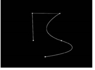
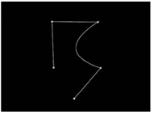

贝塞尔和尖头贝塞尔工具让你画贝塞尔形状。尖头贝齐尔是贝齐尔形状，有尖角，没有切线。
|
|
| 画一个贝塞尔形状。 |
| 1。 | 执行以下操作之一: |
• 单击 贝塞尔 工具 在 RotoPaint 工具栏中。
• 右键单击 贝塞尔 在 RotoPaint 工具栏中选择 尖头贝塞尔 工具 .
| 2. | 在查看器顶部的 RotoPaint 工具设置中，为形状选择颜色、混合模式、不透明度和其他设置。(有关可用选项的信息，请参见 编辑现有笔触/形状属性 )。 |
| 3. | 或者，在 RotoPaint 工具设置中设置形状的寿命。(有关可用选项的信息，请参见 编辑现有描边/形状计时 )。 |
| 4. | 通过单击创建构成形状的轮廓，在查看器中绘制形状。 |
| 5. | 如果使用 Bezier 工具，可以在绘图时单击并拖动以创建点并调整其切线控制柄。使用切线控制柄，可以调整形状的样条线。 |
• 您可以移动单个手柄来调整其长度，以保持角度一致。
• 新闻 转变 移动切线控制柄以同时移动两个控制柄，同时保持角度一致。
• 新闻 Ctrl / Cmd 暂时打破角度。
| 6. | 绘制时，也可以使用其他快捷方式调整形状: |
• 转变 单击在上一个点上创建一个尖锐的出口点 (这在使用尖头贝塞尔工具时没有效果，因为所有的点都是尖锐的)。
|
 |
 |
| 弯曲的出口点。 | 尖锐的出口点。 |
• Ctrl/Cmd 单击可自由绘制形状。
| 7. | 要关闭形状，请按 返回 或单击形状的第一点。更改为不同的工具也会关闭形状。默认情况下，关闭形状会激活选择工具。 |
如果使用 Bezier 工具并通过单击形状的第一个点来关闭形状，也可以拖动该点以创建切线控制滑块来调整它。
| 8。 | 选择工具处于活动状态时，您可以 转变 + 单击多个形状点以打开变换框，您可以使用该框进一步变换形状或形状中的特定点。 |
| 9. | 您也可以在 Bezier 形状中尖角和平滑点，以在您的形状上创建一个尖锐的拐角，或者再次平滑。为此，请在 Bezier 形状中的一点上单击鼠标右键，然后选择 尖头/去光滑 或 平滑 . |
提示: 也可以将跟踪器节点中的动画应用于 Bezier 形状中的点。从跟踪器节点, Ctrl / Cmd 将变换信息拖到要设置动画的点上的查看器中。另见 链接表达式 用于在跟踪器节点和 RotoPaint 控件之间创建链接。
|
|